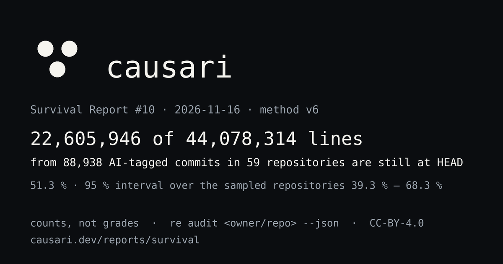

survival report #10 · 2026-11-16 · method v6 · causari 0.5.0 · unranked
Survival Report #10
22,605,946 of 44,078,314 lines introduced by 88,938 AI-tagged commits in 59 open-source repositories are still at HEAD (51.3 %). 95 % interval over the sampled repositories: 39.3 % to 68.3 %. These are counts, not grades. There is no rank, no colour and no verdict on this page; rows are alphabetical. Every number links to the audit bytes behind it and the method and its limits are public.


Repositories
Alphabetical. VERIFIED commits only; PROBABLE counts are shown but never summed. Capped: no commit weighs more than the cap. Median per commit: the middle commit's own ratio. Largest commit: share of introduced lines from the single largest commit. Untagged, matched windows: the survival of the repository's own untagged lines, re-weighted to the age mix of its AI-tagged lines inside matched age windows; Gap: the AI-tagged ratio minus that, in points (definition in the Baseline section). Every number links to the audit bytes of this run; re audit <owner/repo> --json reproduces a row. Each repository name links to its own page: history across reports and a badge.
Baseline: the same repositories' untagged lines, in the matched age windows
gap = AI-tagged line-weighted survival minus untagged survival re-weighted to the age mix of the AI-tagged lines of the same repository, over age windows where both cohorts hold at least 5 commits, computed inside each repository; untagged = commits with no machine-readable AI signal (human-written, inline-completed and untagged-agent code alike); age = commit date to HEAD date. A negative gap means AI-tagged lines survive less than untagged lines in the matched age windows of the same repository.
58 of the 59 repositories with a baseline have an age-matched gap; the median is +1.5 pts (95 % bootstrap interval -0.9 pts to +4.9 pts); 25 gaps fall below zero and 33 above. Age windows below: counts summed across the repositories with a baseline, one row per age window; one large repository can dominate a window, so no gap is computed from these rows: the gap is computed inside each repository and only its median crosses repositories.
Cleared or rewritten (more than 50% of the repository's commits predate the oldest line still at HEAD): OpenHands/OpenHands. Nothing from before that date survives in them, tagged or not; their rows measure the rewrite as much as the code, and the gap is the figure to read.
| Line age | AI-tagged commits | Lines introduced | Still at HEAD | AI-tagged | Untagged commits | Lines introduced | Still at HEAD | Untagged |
|---|---|---|---|---|---|---|---|---|
| 0–30 d | 13,348 | 7,607,029 | 6,152,665 | 80.9 % | 21,138 | 36,539,563 | 32,735,997 | 89.6 % |
| 30–90 d | 26,140 | 15,799,076 | 7,204,841 | 45.6 % | 44,662 | 24,319,593 | 17,126,353 | 70.4 % |
| 90–180 d | 16,999 | 10,139,543 | 3,566,286 | 35.2 % | 50,398 | 59,062,933 | 42,789,797 | 72.4 % |
| 180–365 d | 18,107 | 8,074,541 | 4,199,589 | 52.0 % | 99,371 | 27,609,582 | 12,130,551 | 43.9 % |
| 365–730 d | 11,206 | 2,371,059 | 1,449,587 | 61.1 % | 137,590 | 22,481,482 | 10,609,195 | 47.2 % |
| 730+ d | 3,138 | 87,066 | 32,978 | 37.9 % | 519,825 | 85,927,342 | 20,029,827 | 23.3 % |
Measured but not aggregated
Fewer than 5 AI-tagged commits: the counts are published, the ratio is not, and the repository is left out of the aggregate above.
| Repository | Commits | AI-tagged | Lines introduced | Still at HEAD | Ratio |
|---|---|---|---|---|---|
| openai/openai-python | 1,884 | 3 | 63 | 62 | n < 5 |
| stackblitz/bolt.new | 101 | 0 | 0 | 0 | n < 5 |
By agent, across the aggregated repositories
Alphabetical. A commit is attributed to the agent its metadata names; one agent per commit.
| Agent | Repositories | Commits | Lines introduced | Still at HEAD | Line-weighted |
|---|---|---|---|---|---|
| ai | 2 | 78 | 4,084 | 3,653 | 89.4 % |
| aider | 4 | 11,167 | 375,563 | 234,814 | 62.5 % |
| claude-code | 54 | 31,016 | 21,896,560 | 10,171,564 | 46.5 % |
| copilot | 4 | 4,254 | 267,634 | 151,198 | 56.5 % |
| cursor | 39 | 1,343 | 4,418,671 | 832,669 | 18.8 % |
| devin | 17 | 10,870 | 4,131,307 | 2,523,500 | 61.1 % |
| gemini | 15 | 1,602 | 487,180 | 271,222 | 55.7 % |
| github-copilot | 40 | 15,715 | 7,608,935 | 5,579,053 | 73.3 % |
| grok | 1 | 629 | 951,072 | 634,094 | 66.7 % |
| grok-4.6 | 1 | 4 | 6,845 | 5,590 | 81.7 % |
| jules | 8 | 38 | 3,534 | 2,053 | 58.1 % |
| llm | 1 | 1,616 | 279,780 | 224,880 | 80.4 % |
| openai-codex | 26 | 5,634 | 2,026,488 | 1,183,526 | 58.4 % |
| opencode | 2 | 6 | 3,249 | 2,880 | 88.6 % |
| openhands | 5 | 4,929 | 1,614,347 | 783,009 | 48.5 % |
| pi | 2 | 37 | 3,065 | 2,241 | 73.1 % |
Excluded from this report
- Shallow clones (history truncated; method v6 refuses them): none.
- Audits that failed in this run: fern-api/fern, llvm/llvm-project, richlander/dotnet-inspect.
- Opted out by their maintainers: 0. One line in
.github/survival-optout.txtremoves a repository from the next report, no questions asked.
Where this measurement connected
The witness recorded, in 20 of 20 uploaded shard logs, 1 destination(s) over 128 connection(s): 1 allowed, 0 blocked, 0 failed, under an allowlist of 1 rule(s) in enforce mode. Every destination the witness saw is one the policy allows. The policy is egress-policy.json (source), bound in the sheet as sha256:7a501cbe66356070f9c6c6a5372a8dd425be059bb2315a71bffcccff64692e21.
| Destination | Outcome | Connections | Bytes out | Bytes in |
|---|---|---|---|---|
github.com:443 | allowed | 128 | 456,806 | 32,287,712,622 |
Signed run sheet: reach.sheet.json (profile crovia.pnx.v1, witness urn:causari:survival-report:witness, capture proxy-connect, disclosure clear). Verify it offline with tacet-pnx verify reach.sheet.json --policy egress-policy.json or re pnx verify reach.sheet.json --policy egress-policy.json, or paste the sheet and the policy at croviatrust.com/registry/seal/verify.
Covered: the connection attempts in the shard logs that were uploaded and concatenated into this sheet. Not covered: any shard that uploaded no log; what the runner does outside the measurement step (checking out this repository, installing the tool, uploading the shard); and any connection that did not go through the witness. The record says where the measurement connected through the witness and how many bytes crossed, nothing about their content.
Method
- Method v6, causari 0.5.0. Detection from commit metadata only; no model, no guess from the diff. Full text and known artefacts at causari.dev/method.
- Survival:
git blame -w -M -Cat HEAD, honouring.git-blame-ignore-revswhere present; a line counts for the commit blame attributes it to, capped at that commit's introduced count. - Cap rule: a commit weighs at most the 95th percentile of per-commit introduced line counts in its repository, and never more than 10,000 lines. The capped ratio is what one bulk commit cannot dominate.
- Sample floor: 5 VERIFIED commits. Below it a repository is measured but not aggregated.
- Intervals: 95 % percentile interval from 2000 bootstrap resamples of the 59 aggregated repositories (with replacement, seed 10). It describes the sampled repositories, not all AI-assisted code, and not the repositories not in this sample.
- Full clones only: method v6 refuses shallow clones; the workflow clones each repository completely before measuring.
- Baseline (method v3): every UNKNOWN commit of a repository, human-written, inline-completed or untagged-agent code alike, forms its untagged cohort; the by-age table and the age-matched gap put it next to the AI-tagged one. The untagged cohort includes AI code that carried no tag.
- Reproduce or contest:
re audit <owner/repo> --jsongives the exact bytes behind a row; the bytes of this run are underrepos/next to this page. Open an issue with your JSON if it differs.
Cite as: Crovia Trust. Survival Report #10 (2026-11-16). https://causari.dev/reports/survival/2026/10/
What this report is, and is not
This report counts lines. For each repository it states how many lines were introduced by commits that carry machine-readable AI authorship metadata (trailers such as Co-Authored-By naming an agent, bot author identities, aider markers, and, from method v4, git-ai notes that name a non-empty tool; method v3 counted any git-ai note), and how many of those lines git blame still attributes to those commits at HEAD, under the method version stated on the page (blame with -w -M -C, a per-commit weight cap, a sample floor, full clones only; from method v3 the untagged lines of the same repository, in the matched age windows, stand next to the AI-tagged ones). Every row is reproducible with one command.
It is not a quality judgement, a productivity measure, total AI usage, proof of authorship, a security finding, a correctness finding, or a causal effect of AI. Deleted lines include removed features and rewritten prototypes; surviving lines include dead code. It is not a sample of all AI-assisted code: inline completions leave no trace in git, untagged agent commits are invisible, and the repositories were selected, not drawn at random: 30 hand-picked and 34 found by GitHub commit search as public repositories with at least 5 commits carrying the same AI authorship metadata and at least 100 stars, most-starred first (discovered 2026-09-27); the selection rule and the counts behind it are public. The latest discovery run did not finish, and this list was not replaced. The intervals describe the sampled repositories only.
Prior measurement work asks related questions with different instruments. GitClear publishes churn reports built from code-change patterns across the repositories it analyses; arXiv 2601.16809 ("Will It Survive?") follows the modification of agent-authored code in 201 projects with its own detector and finds that such code is modified less often than human-written code. This report does not reproduce either method and does not adjudicate between them: it publishes counts from git metadata alone, with the method version, the tool version and the exact bytes behind every number, so that the three can be read side by side.
re audit <owner/repo> --json # the exact bytes behind any row